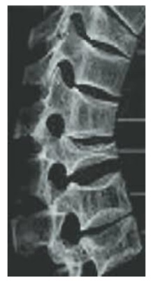

Mulher de 48 anos foi referenciada ao reumatologista com diagnóstico recente de artrite reumatoide. Encontra-se em uso de corticoide e realizou densitometria óssea e o T-escore na coluna lombar (L1-L4) foi -2,3. Desde então, vem em uso de carbonato de cálcio e vitamina D. Ciclos menstruais irregulares. Negou outros antecedentes patológicos ou uso de outras medicações. Negava tabagismo ou etilismo. Sua mãe teve osteoporose menopausal. Ao exame, IMC 24 kg/m2, altura 158 cm, sem cifose ou escoliose. Exames laboratoriais: 25-OH vitamina D 30 ng/mL ( VR: > 20 ng/dL) , cálcio 9,5 mg/dL (VR: 8,5 10,2 mg/dl), fósforo 3,0 mg/dl (VR: 2,5- 4,5 mg/dL) e PTH 42 pg/ml (VR: 10-65 pg/mL). Radiogra a de coluna torácica não revelou sinais de fratura vertebral. LEGENDA: VR: valor de referência; IMC: índice de massa corporal; PTH: paratormônio. Qual a medicação mais indicada para esta paciente?
Mulher toma regularmente cerca de 400 ml de leite ao dia e começou a tomar cálcio juntamente com denosumabe. A prescrição inicial era de 2 copos de 500 mg ao dia que ela, por conta, passou para 1. Com esses dados, sua melhor conduta em relação ao cálcio é
A possibilidade de rastreamento populacional amplo e aleatório com densitometria óssea DMO é afastada em razão de seu baixo poder preditivo e de seu alto custo. Podemos apenas concordar que:
Critérios diagnósticos de osteoporose critério densitométrico eou critério clínico A Organização Mundial da Saúde (OMS) define a osteoporose como uma condição em que a densidade mineral óssea é igual ou inferior a 2,5 desvios padrão abaixo do pico de massa óssea encontrada no adulto jovem, e a osteopenia ou baixa massa óssea como uma condição em que a densidade mineral óssea encontra-se entre 1 a 2,5 desvios padrão abaixo do pico de massa óssea encontrada no adulto jovem. Está correto que:
Aproximadamente 5% dos indivíduos que apresentam fratura de quadril morrem durante a internação hospitalar, 12% morrem nos 3 meses subsequentes e 20% morrem no ano seguinte ao da fratura. Está adequado que:
Paciente 52 anos, G2P2A0, encontra-se no climatério, apresentando exame compatível com densidade óssea normal. Está preocupada, pois tem história familiar positiva para osteoporose, mas não deseja utilizar hormônios. Nesse caso, assinale a alternativa que apresenta a prevenção CORRETA para a osteoporose na menopausa.
Paciente de 78 anos, sexo feminino, refere estar fazendo um tratamento devido a uma fratura espontânea no corpo vertebral T12 secundária à osteoporose. Não recorda o nome do medicamento, porém relata utilizar o remédio através de uma injeção subcutânea diária. Lembra que o médico orientou o seu uso pelo período máximo de 18 a 24 meses devido ao risco de desenvolvimento de osteossarcoma com o uso mais prolongado. A partir do exposto, é correto a rmar que essa paciente está utilizando:
Mulher de 70 anos, sem comorbidades, ao escorregar no banheiro de casa, sofreu fratura do colo do fêmur. Além do cálcio e da vitamina D, a medicação a ser iniciada é o
Sobre o escore T da Densitometria Óssea é CORRETO afirmar:
No que se refere à osteoporose pós-menopáusica, é correto afirmar que:
Uma mulher de 62 anos vai ao consultório de Clínica Médica para avaliação periódica de saúde. É assintomática, desconhece doenças atuais ou prévias e nega o uso de medicamentos. A menopausa ocorreu aos 43 anos, quando fez reposição hormonal por 2 anos. Fuma 1 maço de cigarro ao dia há 15 anos e faz uso de 2 latas de cerveja de 360mL aos sábados. Ingere um copo de leite ao dia, mas não faz uso de derivados do leite ou vegetais folhosos. Faz pilates 3 vezes por semana. O exame físico não revela anormalidades. Traz os seguintes resultados de exames. Densitometria óssea: colo do fêmur T-score -2,4; coluna lombar L1-L4 T-score -2,1. Exames de laboratório: 25-OH-vitamina D 26ng/mL (VR >30ng/mL), cálcio total 9,3mg/dL (VR 8,8-10,3mg/dL), albumina 3,6g/dL (VR 3,5-5,5g/dL), paratormônio 65pg/mL (VR 18- 88pg/mL); potássio 3,6mEq/L (VR 3,5-5,5mEq/L); sódio 139mEq/L (135-145mEq/L); hemoglobina 14,9g/dL (VR 12-16g/dL); leucócitos 4.590/mm3 (VR 4.000-11.000/mm3); plaquetas 298.000/mm3 (VR 150.000-450.000/mm3); creatinina 0,6mg/dL (VR 0,6-1,2 mg/dL). Assinale a conduta MAIS ADEQUADA para esta paciente.
Residente de Medicina de Família em seu primeiro mês na UBS cou responsável de organizar a roda de conversa mensal com o Grupo de Idosos com o tema Osteoporose. Durante a atividade com vários idosos de ambos os sexos houve várias perguntas e dúvidas sobre o tema. Osteoporose é um distúrbio esquelético crônico e progressivo, de origem multifatorial, que acomete principalmente, pessoas idosas, tanto homens quanto mulheres, estas geralmente, após a menopausa. Assinale a alternativa correta que descreve indicações para realização de densitometria óssea, a qual permite estabelecer o diagnóstico da osteoporose. Leia as proposições abaixo: I. O exame de densitometria óssea é indicado para mulheres acima de 65 anos e homens acima de 70 anos. II. O exame de densitometria óssea é indicado para todas as mulheres acima de 55 anos e homens acima de 60 anos. III. Pode ser indicado para mulheres abaixo de 65 anos e homens abaixo de 70 anos que tenha um dos critérios: Baixo Peso (Índice de Massa Corporal menos que 18,5 kg/m²), fratura prévia e que fazem uso de medicações que aumentam o risco de Osteoporose. IV. Pode ser indicado para todas as mulheres acima de 55 anos com fratura prévia, que tem doenças e faz uso de medicações que aumentam o risco de Osteoporose. Assinale a alternativa INCORRETA.
Considerando a necessidade de prevenção e manejo de perda de massa óssea, são recomendados os itens listados abaixo, com uma exceção que está errada. Indique o item com erro:
A osteoporose é uma doença sistêmica do esqueleto, caracterizada por baixa massa óssea e deterioração da microarquitetura do tecido ósseo. Na análise laboratorial da osteoporose primária, sem fraturas associadas, comumente encontram-se:
Na avaliação da Densitometria Óssea, o escore Z pode indicar causa secundária para osteoporose quando menor que:
Acidentes de baixo impacto, como quedas da própria altura, constituem as causas mais comuns de fraturas patológicas, as quais estão mais comumente associadas à osteoporose involucional. Não são considerados primariamente sítios de fraturas osteoporóticas:
Apresentação clínica Mulher, 75 anos de idade, refere dor lombar contínua. A radiogra a da coluna é apresentada. Qual é a condição apresentada pela paciente?

Critérios diagnósticos de osteoporose critério densitométrico eou critério clínico Considere as assertivas abaixo sobre osteoporose. I - Não pode ser diagnosticada com base exclusivamente em critérios da densiometria óssea em mulheres jovens na pré- menopausa. II. - Embora a diminuição da densidade mineral óssea esteja associada a aumento do risco de fratura, a maioria das fraturas por fragilidade óssea ocorre em pacientes com escore T > -2,5. III. - Além da coluna lombar e do fêmur proximal, a densitometria de rádio também pode ser utilizada, em algumas condições clínicas, como sítio para o diagnóstico de osteoporose. Quais são corretas?
Vitamina D Paciente de 64 anos de idade, menopausada há 14 anos, apresenta em exame de densitometria óssea de coluna lombar o T-score L1-L4 de -2.6 desvios-padrão. Antecedentes: câncer de mama na mãe e hipercolesterolemia. Sem sintomatologia significativa. O melhor tratamento nesse caso será:
Moduladores seletivos dos receptores de estrógeno SERMs Mulher de 60 anos vem pra consulta com densitometria mostrando T-score de -3 na coluna e - 2,7 no fêmur. História de baixo consumo de leite por intolerância à lactose. Mãe falecida após queda com fratura de quadril. Nesse caso, o medicamento recomendado é:
Moduladores seletivos dos receptores de estrógeno SERMs Paciente de 46 anos de idade, gesta 4, para 4, data da última menstruação há 14 meses. É hipertensa crônica controlada em uso de enalapril 10 mg de 12 em 12 horas, hipotireoidismo em uso de levotiroxina 50 mcg/dia. Apresenta as seguintes queixas: ondas de calor, 15 a 17 episódios ao dia, notadamente no período noturno, sudorese, parestesia nos membros superiores, insônia e nervosismo. Índice de massa corpórea: 26. Traz os seguintes exames: FSH 48 mUI/ml, estradiol 24 picogramas/ml. Ecogra a endovaginal: volume uterino 128 cm³, endométrio 5 mm, mamogra a BIRADS 2 (calci cações secretórias múltiplas). Colesterol 180 mg/dl, HDL 54 mg/dl, triglicerideos 110 mg/dl, glicemia de jejum 92 mg/dl, hemograma normal. TSH 2,1 mU/L. Densitometria óssea: L1-L4: Tscore: -1,4 colo de fêmur: Tscore: -1,2. Fêmur total: Tscore: -1,6. Com relação ao caso clínico apresentado, identifique como verdadeiras (V) ou falsas (F) as seguintes afirmativas: ( ) Nessa paciente, está indicada a prescrição de raloxifeno 60 mg/dia + cálcio e vitamina D. ( ) Prescrever estradiol 50 microgramas/dia + acetato de noretisterona 170 microgramas/dia na forma de adesivo. ( ) Solicitar nova dosagem do FSH, estradiol e prescrever fluoxetina 20 mg/dia via oral. ( ) Prescrever isoflavona de soja 75 mg, via oral, 1 vez ao dia. Assinale a alternativa que apresenta a sequência correta, de cima para baixo.
Sobre osteoporose induzida por glicocorticoides, assinale a alternativa correta.
Uma senhora de 67 anos retorna ao seu clínico portando o resultado da densitometria solicitada para rastreio da osteoporose. É assintomática, fuma um maço de cigarro por dia há 30 anos, tem doença renal crônica estágio 4 e hipertensão arterial sistêmica. Densitometria: T-score colo do fêmur -3,2; T-score L1-L4 -2,2. (valores de referência; T - score "maior ou igual que"-1 normal; < -1 Sobre esse caso, assinale a alternativa CORRETA.
Os seguintes medicamentos estão associados à osteoporose, EXCETO:
A osteoporose representa hoje um grave problema de saúde pública, apresentando um alto índice de morbimortalidade, sendo necessário uma abordagem multidisciplinar. Sobre essa doença, verifica-se que:
Uma paciente de 61 anos de idade comparece a uma consulta ginecológica de rotina. Refere menopausa há seis anos e nega sintomas climatéricos atuais. Informa que ultimamente tem sofrido quedas frequentes em casa e questiona se possui algum risco de fraturas ósseas. Relata sedentarismo, tabagismo e baixa ingesta de alimentos contendo cálcio. Com base nesse caso clínico e nos conhecimentos médico correlatos, julgue o item a seguir. Deve-se pensar em solicitar densitometria óssea.
Indicações Paciente de 53 anos, branca, tabagista (40 cigarros/dia), veio ao ginecologista trazendo resultado de densitometria óssea. Queixava-se de fogachos, insônia e dor intensa nas articulações. A menopausa ocorrera há 1 ano. Negou comorbidades e uso de medicações. Os últimos exames laboratoriais foram normais. Tem história familiar de câncer de mama (tia materna, aos 57 anos). À densitometria, o escore T da coluna (L1-L4) foi de -1,5, o do colo de fêmur de -1,5 e o do fêmur total de - 2,6. Não pratica exercícios físicos regularmente, fazendo apenas caminhadas eventuais. Com base no quadro, assinale a assertiva CORRETA:
São fatores relacionados a maior risco de osteoporose:
Mulher de 52 anos apresenta sintomas climatéricos, há 2 anos. AP: histerectomia total por leiomioma há 6 anos, nega doenças crônicas. AF: mãe com osteoporose, nega câncer de mama. Mamogra a BIRADS 2. Densitometria óssea: coluna lombar T-score de – 1,5 desvio-padrão e em colo de fêmur T-score de –1,3 desvio-padrão. O plano terapêutico mais adequado é
Uma paciente de 65 anos de idade, tabagista, compareceu à consulta médica. Evidencia-se que apresentou fratura vertebral há dois meses. Levou densitometria óssea com Z-score de -1 e T-score de -2,6. Com base nesse caso hipotético, assinale a alternativa CORRETA:
É contraindicação do uso de SERMs em pacientes com osteoporose:
Mulher de 66 anos, HAS há 10 anos, pneumopata crônica secundário a tabagismo, em uso de oxigênio domiciliar, prednisona 20 mg/dia há 3 meses, budesonida com formoterol inalatório, hidroclorotiazida, losartana e amlodipina, vem encaminhada do pneumologista por alteração de densitometria óssea, assintomática no momento. Relata menopausa aos 41 anos, ingesta de 01 copo médio de leite ao dia. Não ingere regularmente queijo ou iogurte. Relata exposição solar 40 minutos/dia regularmente. Densitometria óssea: colo do fêmur 0,671 g/cm2 – T score -2,8 L1-L4 0,888 g/cm2 – T score - 1,7. Qual a conduta inicial adequada?
Mulher, 55a, branca, comparece ao Ambulatório de Ginecologia queixando-se de sensação de calor intenso pelo corpo, principalmente em região de tórax e face, 10 vezes ao dia, durando aproximadamente 10 minutos, há três anos. Frequentemente acorda à noite devido ao “calorão”. Já tentou usar roupas mais leves e frequentar ambientes ventilados, porém não notou melhora dos sintomas. Refere baixa ingesta de cálcio. Antecedente Pessoal: menopausa há dois anos, nega cirurgia, e comorbidades. Antecedentes familiares: negativo para neoplasias. Exame ginecológico: normal. Densitometria óssea: T-score de -2,2 em coluna lombar total e T- score de -1,3 em colo femoral. Mamogra a: BIRADS@ 2. A conduta é prescrever:
Mulher de 79 anos procurou uma Unidade Básica de Saúde (UBS) próxima à sua casa após queda em domicílio e, por isso, pediu para fazer uma densitometria óssea. Diante do ocorrido, o médico decidiu calcular o FRAX, algoritmo adaptado da Organização Mundial de Saúde (OMS), e fez as orientações quanto ao risco de queda. O FRAX:
Moduladores seletivos dos receptores de estrógeno SERMs Paciente com 61 anos de idade vem à consulta de rotina no Ambulatório de Climatério trazendo uma densitometria óssea cujo relatório revela: T-score na coluna lombar = < -2.8; colo de fêmur = T-score < -2.6; fêmur total = < -3.0. Apresentou exame de vitamina D 25 OH = 25 ng/ml; cálcio sérico = 8.9 mg/dl. Gesta 2, para 2, menopausada há 12 anos. Histerectomizada há 10 anos por leiomioma. Comorbidade: hipertensão arterial com bom controle com losartana 50 mg/dia. Com base no caso, qual a conduta apropriada?
Podem ser listadas como causas secundárias de osteoporose o uso de:
Dentre os fatores abaixo, qual é considerado fator de risco para osteoporose:
O fator de risco que possui maior relação com o risco de fraturas osteoporóticas é:
Na ostoporose pós-menopausa os efeitos da escassez de estrogênio sobre o remodelamento ósseo estão ligados a um sistema de moléculas chamadas ligantes do receptor do ativador do fator nuclear-kB (RANKL), pelo seu receptor (RANK) e por seu receptor solúvel, a osteoprotegerina. Em relação a esse tema, assinale a alternativa ERRADA:
Entender a siopatologia da osteoporose pós-menopausa é importante, inclusive para evitar fratura osteoporótica, um dos efeitos mais deletérios ao paciente. A diminuição abrupta da massa óssea tem relação com níveis decrescentes de
No acompanhamento da mulher no climatério, qual o perfil de maior risco para osteoporose?
Mulher, 73 anos, HAS há 10 anos, pneumopata crônica secundário a tabagismo, em uso de oxigênio domiciliar, prednisona 20 mg/dia há 3 meses, budesonida com formoterol inalatório, hidroclorotiazida, losartana e amlodipina, vem encaminhada do pneumologista por alteração de densitometria óssea, assintomática no momento. Relata menopausa aos 41 anos, ingesta de 01 copo médio de leite ao dia. Não ingere regularmente queijo ou iogurte. Relata exposição solar 40 minutos/dia regularmente. Ao exame físico PA 140 x 70 mmHg, aparelho respiratório MV+ com sibilos esparsos, FR24, Ritmo cardíaco regular, sem sopros. Densitometria óssea: colo do fêmur 0,671 g/cm2 - T score -2,8 L1-L4 0,888 g/cm2 - T score - 1,7. Qual o diagnóstico densitométrico do colo do fêmur e da coluna lombar respectivamente?
Diversos fatores de risco modi cáveis e não modi cáveis para osteoporose já foram identi cados. O fator que NÃO aumenta o risco de osteoporose é:
A densitometria óssea está formalmente indicada para: I. Mulheres a partir dos 65 anos, independentemente dos fatores de risco; II. Homem a partir dos 70 anos, independentemente dos fatores de risco; III. Adultos que apresentam fratura depois dos 50 anos; IV. Mulheres na pós-menopausa. Quais estão CORRETAS?
Vitamina D Paciente com 58 anos de idade, branca, tabagista crônica, relata amenorreia desde os 44 anos. Tem histórico familiar de câncer de mama (mãe e irmã), O exame de densitometria óssea mostra T-score -0,8 DP em coluna e -1,2 DP em colo de fêmur. Não apresenta sintomatologia significativa e há 6 meses iniciou suplementação de cálcio e vitamina D por conta própria. Está indicado, nesse caso:
Sobre causas secundárias de osteoporose, assinale a alternativa que contém somente itens CORRETOS.
São causas de Osteoporose Secundária, EXCETO:
Sobre Osteoporose assinale a alternativa correta:
Paciente feminina, 55 anos, portadora de artrite reumatoide diagnosticada há 20 anos, comparece ao ambulatório de clínica médica para avaliação de rotina. Encontra-se com bom controle do quadro articular com o uso de metotrexato 15 mg/semana e prednisona 7,5 mg/dia, conforme prescrição do reumatologista. Qual a conduta plausível quanto ao rastreio e prevenção de osteoporose para a paciente?
A densitometria óssea é um exame utilizado para avaliar a densidade mineral óssea e o risco de fraturas patológicas. Os pontos anatômicos para mensuração da densidade óssea nesse exame são:
A osteoporose induzida por glicocorticoides é a causa mais comum de osteoporose causada por fármacos. Assinale a opção CORRETA com relação à prevenção e/ou tratamento desta frequente condição.
Com relação à osteoporose, assinale a alternativa CORRETA:
Sobre diagnóstico de osteoporose, identifique como verdadeiras (V) ou falsas (F) as seguintes afirmativas: ( ) O exame de densitometria óssea por DXA se destina a avaliar a presença de osteoporose e o risco de fratura, podendo antecipar a causa quando o valor do T-escore está abaixo de -2,50 DP. ( ) A osteoporose se caracteriza por aumento da fragilidade do esqueleto, resultante de diminuição da quantidade e qualidade óssea. ( ) O homem e a mulher nascem com massa óssea igual, e é só na menopausa que se tornam diferentes, com uma perda maior na mulher. ( ) O uso de glicocorticoides é a causa mais frequente de osteoporose secundária em qualquer idade, porém só causa fratura em doses elevadas. ( ) Uma mulher na menopausa e com osteoporose merece realizar uma avaliação básica para descartar causa secundária independente da faixa etária. Assinale a alternativa que apresenta a sequência correta, de cima para baixo.
Paciente do sexo feminino, etnia negra, 66 anos, refere dores ósseas e dor lombar frequente e está preocupada com a possibilidade de se tratar de osteoporose. Relata que possui antecedente familiar materno de osteoporose com fratura do colo do fêmur. A paciente relata ainda menopausa aos 52 anos. Refere exposição solar frequente. Ingere 3 a 4 porções de leite ou derivados por dia. Não realiza atividades físicas. Nega ocorrência de quedas. Possui índice de massa corporal de 28 Kg/m2 . Quanto ao caso, assinale a alternativa correta. Respostas: 1 12 23 34 45 56